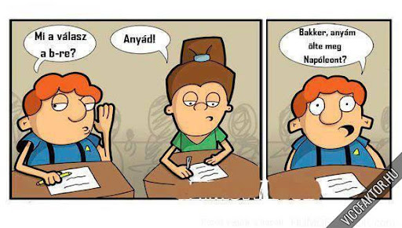

Kerestem egy "dolgozatírás vicces képet"
"Csak egy kérdést nem tudtam, Hál Istennek meg nem buktam, Maga tanárként eszméletlen, Az ötöst azt megérdemlem!"
Ha ezt a pólót viselem
DOLGOZATOT
Írok!
Amikor dolgozatot írok:
Csinálom a feladatot!
Kiszámolom hányasra állnék, ha ez egyenes lenne!